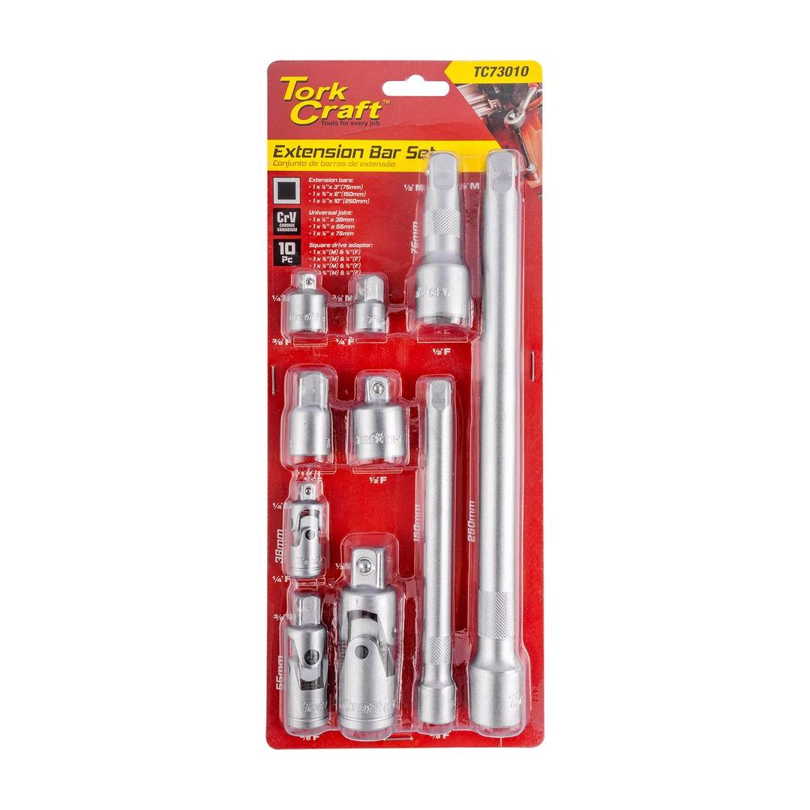
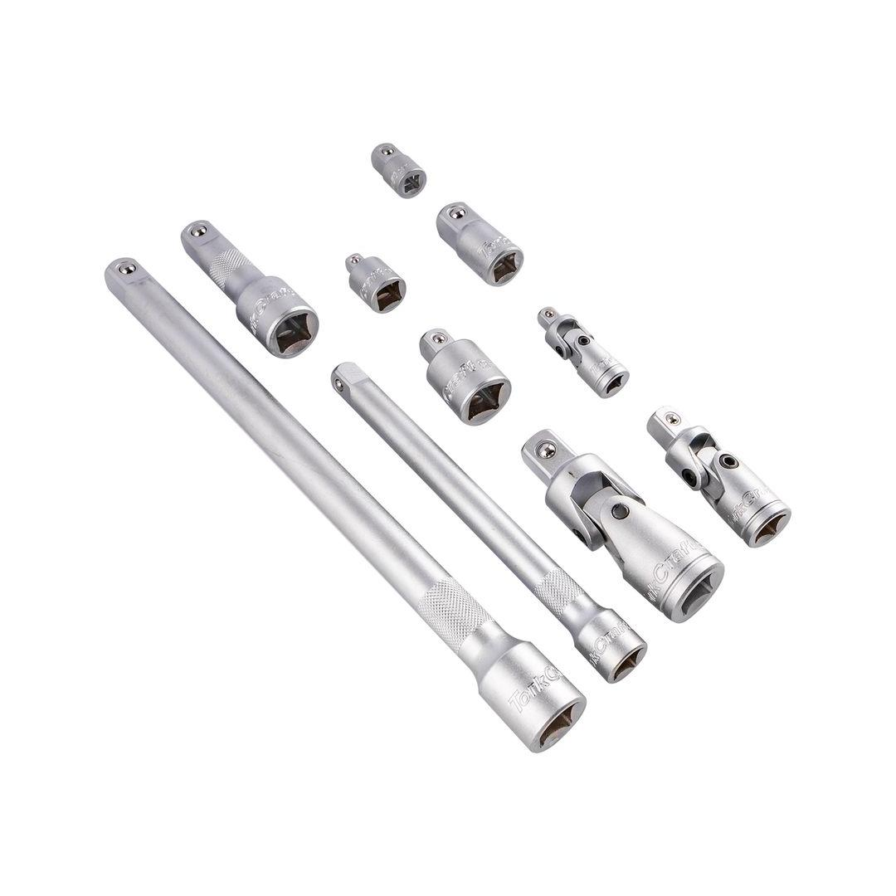
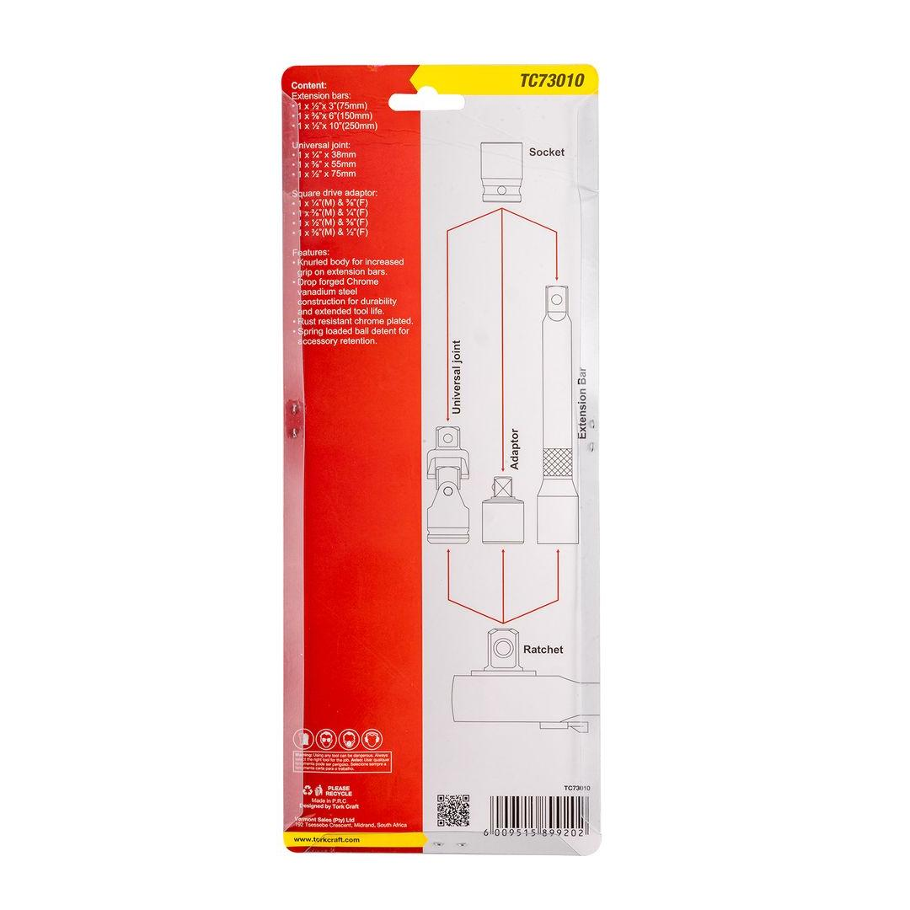

TC73010



With the components and applications of a socket adaptor and extension bar, you can select the right tools for your specific needs and enhance your mechanical capabilities.
Socket Adaptor:
A socket adapter is a tool used to connect sockets of different sizes or shapes. It essentially acts as a bridge between two incompatible sockets, allowing you to use a wider range of tools and equipment with different setups.
Extention Bar:
An extension bar is a tool used to extend the reach of a socket wrench or other similar tool. It typically consists of a long, slender bar with a square drive on each end. One end fits into the square drive of a socket wrench, while the other end accepts the square drive of a socket or other attachment.
Universal Joint:
A universal joint, also known as a U-joint or Cardan joint, is a mechanical joint used to connect two shafts whose axes are inclined to each other. It allows for angular misalignment between the two shafts while transmitting rotary motion.
Application: